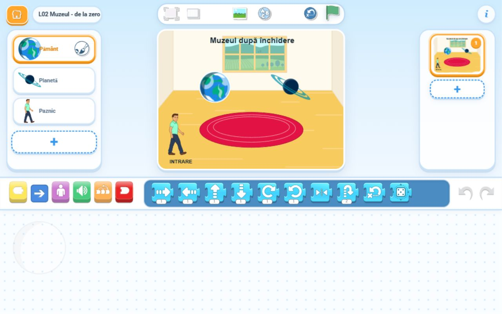

Lecția 02 · 60 de minute
Muzeul după închidere
Exponatele prind viață când muzeul se închide. La inspecția paznicului încremenesc, apoi își reiau mișcarea. Copiii programează regula poveștii.
- Pământ · planetă · paznic
- Doar biblioteca ScratchJr
- 10 minute pentru creația proprie
Sala de astronomie
„Pământul și planeta cu inele se rotesc după închidere. Paznicul verifică sala. Cum le facem să rămână nemișcate cât timp el le inspectează și să repornească abia când revine la intrare?”
Alegem Empty Room, Earth, Planet și Father din aplicație. Sunt alte personaje decât în ștafetă. Totul se construiește într-o singură scenă.

Trei misiuni, o inspecție
- Exponatul prinde viață: rotație continuă cu Repetă mereu.
- Încremenim la semnal: atingerea paznicului trimite roșu; fiecare exponat își oprește propria animație.
- Inspecția completă · dificil: o singură atingere pornește oprirea, drumul dus-întors și reluarea automată. Ambele exponate trebuie să rămână nemișcate pe tot traseul.
Muzeul meu: copilul schimbă ritmul sau rotația și păstrează regula inspecției.
Două rezerve: un exponat se trezește numai la atingere (+5 min); paznicul inspectează exponatele pe rând (+10 min).
PDF-ul lecției are 13 pagini: un plan concis și capturi reale cu programele fiecărui personaj pentru toate etapele. PDF-ul cursului păstrează Lecția 1 la paginile 1-13 și Lecția 2 la 14-26.
Ghidul orei
Copiii încep un proiect nou. Nu trebuie copiate fișiere pe tabletele lor. Demonstrezi scurt, apoi îi lași să construiască și să testeze.
- 0-8 min · Povestea și scena
Construim sala de astronomie. Alegem exponatele din bibliotecă și prezicem ce trebuie să facă atunci când vine paznicul.
- 8-20 min · 1. Exponatul prinde viață
Pământul se rotește fără să se deplaseze și fără să mai apăsăm steagul. Descoperim blocul roșu Repetă mereu. Planeta și paznicul încă nu au programe.
- 20-33 min · 2. Încremenim la semnal
Animăm și planeta în sens invers. Atingerea paznicului trimite roșu. Fiecare exponat primește roșu și își oprește propria animație cu blocul portocaliu Stop.
- 33-36 min · Pauză activă
Doi copii sunt exponatele; al treilea face inspecția. Clasa stabilește când este permisă repornirea.
- 36-48 min · 3. Inspecția completă | dificil
O singură atingere: ambele exponate încremenesc; paznicul merge 12 pași, așteaptă 10, revine 12. Doar la intrare trimite albastru, care repornește ambele animații.
- 48-58 min · Muzeul meu
Copilul schimbă ritmul, sensul ori mărimea rotației și testează propria variantă. Păstrează oprirea în timpul inspecției și reluarea după întoarcere.
- 58-60 min · Probă și salvare
O inspecție completă, Stop din bara de sus, resetare, galerie și redeschidere. Copilul arată de ce exponatele nu repornesc prea devreme.
Ghid complet: pași, soluții și indicii →
Regulile importante ale blocurilor
Blocul portocaliu Stop oprește celelalte programe ale personajului care îl execută. Fiecare exponat are propriul fir de oprire. Plicurile trebuie să aibă aceeași culoare la trimitere și primire.
Așteaptă 10 este aproximativ o secundă. Paznicul trimite albastru după întoarcere; exponatele nu folosesc o pauză ghicită pentru a decide când să repornească.
În a doua rezervă, albastrul reia Pământul, oprește planeta și pornește un fir separat al paznicului. Capturile și ghidul arată toate firele.
Scenă fără cod · SJR · Cele patru etape · SJR · Cele două rezerve · SJR
Arhivă · Provocările iepurașului · 50 de minute
Materiale anterioare, diferite de muzeu: ghid online, ghid PDF, cartonașe, instrucțiuni, soluții, pachet ZIP anterior.